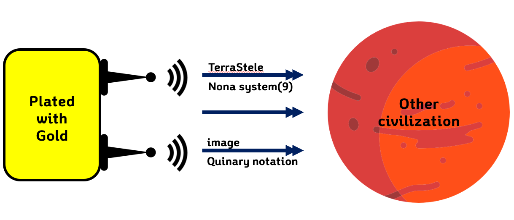
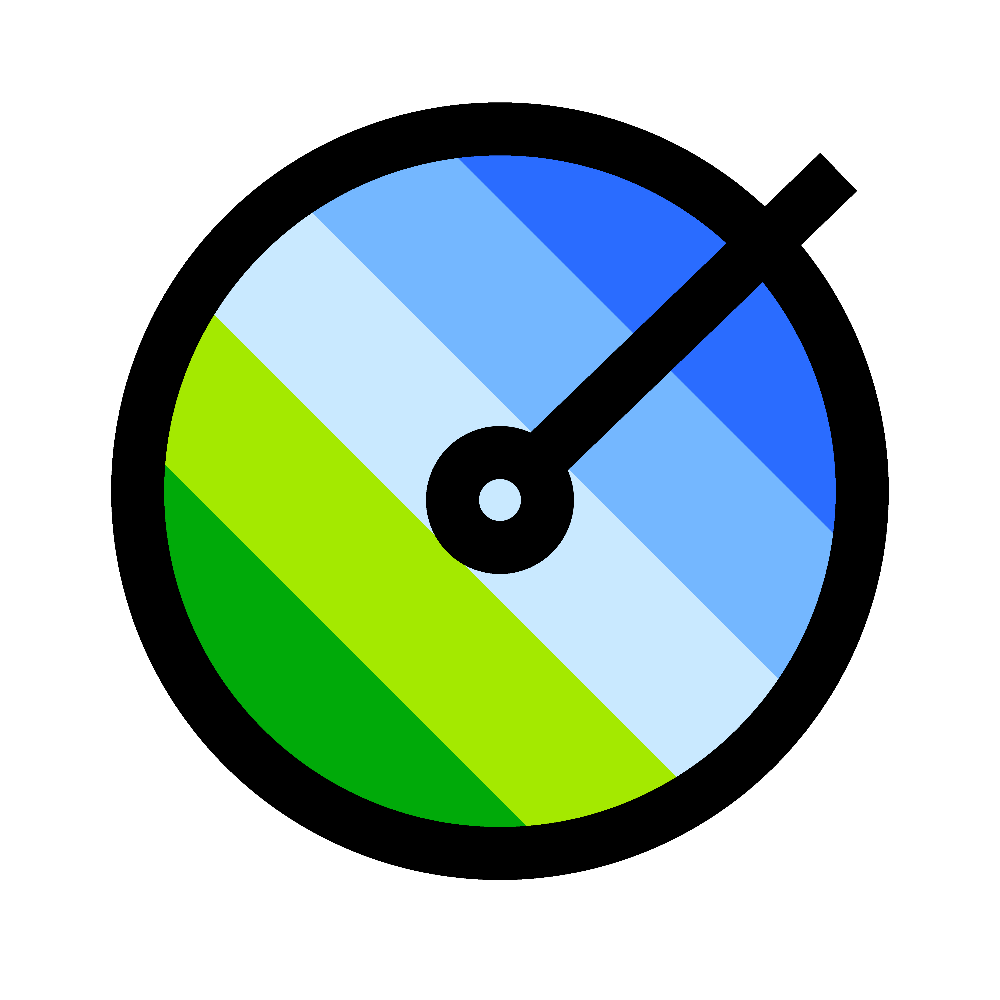

Terra Stele is a hybrid communication protocol-language system aimed at communicating and educating other advanced spacefaring civilizations, as a part of NASA Space Apps Challenge 2018.
You can learn about our approach and code in this webpage and the links.
Purpose
The Modernized Golden Record
It's 2018 now, so almost 40 years have passed since the launch of the Voyager 1 and 2. There had been drastic , yet significant advancements in most of the existing fields of study, especially fields that are related to technology.
After reviewing the contents that were included in the 1977's golden record, we could easily notice that the idea of sending a golden record into the space is quite outdated, and the contents were also from the past. This made us to think that in order to provide the correct representation of mankind, we need to renew the information of the golden record in some way. Since the original golden record had some information stored in it in form of sound waves, we decided to include a transmitter that transmits specific electromagnetic waves which will give us information when decrypted, and several images that describes the Earth most effectively.
So basically, our goal is to recreate a digitalized version of the Voyager Golden Record.
The Spacecraft
Hazards of Space
To withstand the extreme conditions of space and time, we have created our main information plates out of gold-plated copper. The two radio transmitters are powered by an RTG(Radioisotope Thermal Generator) for long-lasting, stable power. One antenna transmits our custom language system, while the other transmits our image quinary system.

The Language
We have used 9 different objects to create a self-contained mathematical and logical language that can be further extended to define more subjects such as science, humanities and arts. We started by defining basic logical and mathematical expressions.
/help
----------------------------------Introduction--------------------------------
‘abcd’ will introduce about function like ‘+’, ‘-’, etc. Our language system will be tetramal system.
‘xy’ represent random number that make a generalization.
Basically, our number will be represent as binary system.
0,1,01,11,100,101,110,111,1000,1001
-----------------------------------Command---------------------------------
1. extra: means “and so on” ex) 0,1,10,11,100,101,110,extra
2. equal: means “=” ex) x equal y (x and y can be exact value or set)
3. add: means “+” ex) x add y
4. minus: means “-” ex) x minus y
5. negative: means “-number” ex) negative x
6. multiply: means “x” ex) x multiply y
7. compare: means “<” ex) x compare y
8. bool: means “logic” ex) bool(x)
9. true: means “answer of bool(x), when assumption is corresponding with conclusion”
10. false: means “answer of bool(x), when assumption is not corresponding with conclusion”
11. not: means “~ sth” ex) not x
12. include: means “∈” ex) x include y
13. or: means “||” ex) x or y
14. and: means “&&” ex) x and y
15. exist: means “∃” ex) exist x
16. all: means “∀” ex) all x
17. len: means “number of the set” ex) len x
18. emptyset: means “∅”
19. union: means “∪” ex) x union y
20. intersection: means “∩” ex) x intersection y
21. divide: means “÷” ex) x divide y
22. pi: means “π”
23. in_rel: means “the set that include to other thing” ex) x in_rel y
24. natural: means “ℕ, the set of natural numner”
25. integer: means “ℤ, the set of integer”
26. rational: means “ℚ, the set of rational number”
27. real: means “ℝ, the set of real number”
This is the final transmitted message, written with 9 characters.
In order to transmit visual data with electromagnetic waves, we have created a custom Python 3 script.
import sys
from PIL import Image
import numpy as np
import scipy.io.wavfile as wf
chars=np.asarray(['0','1', '2', '3', '4'])
f, sc, gcf, wcf, sr = 'terrastele.github.io/assets/logo.png', 0.005, 1, 2, 44100
img = Image.open(f)
size = (round(img.size[0]*sc*wcf), round(img.size[1]*sc))
img = np.sum(np.asarray(img.resize(size)), axis=2)
img = (1.0 - img/img.max())**gcf*(chars.size-1)
flat = [x for y in chars[img.astype(int)] for x in y]
raw = "".join(flat)
print(flat)
def gen(num, sr, d):
t = np.linspace(0, d, int(d*sr), endpoint=False)
hz = (num+1) * 400
note = np.sin(2 * np.pi * hz * t)
return note.astype(np.float32)
tone = np.asarray([])
for x in flat:
tone = np.append(tone, gen(int(x), sr, 0.1)).astype(np.float32)
wf.write("note.wav", sr, tone)
For example, the Terra Stele logo

can be represented in .wav audio form as
Here, every individual note lasting 0.1s has 5 different pitches, which each signifies a level of brightness. The notes have been rounded to a product of two prime numbers in order to make decoding possible.